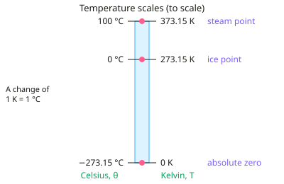

A-level Physics Year 13 · Topic 21
Thermal energy and temperature
Thermal energy and temperature is about what temperature really means, and how energy changes the temperature and state of matter.
We will use the kelvin scale and absolute zero, and the idea of internal energy.
Then we calculate with specific heat capacity and specific latent heat, and carry out the practicals to measure them.
- 4 subtopics
- 252 questions
- Free: 21.1 notes and 10 questions
In this topic
- 21.1Temperature scales, absolute zero and thermal equilibriumFree below · 65 questions
- 21.2Internal energy and specific heat capacityOpen in Full Marks · 61 questions
- 21.3Specific latent heat and changes of stateOpen in Full Marks · 55 questions
- 21.4Practical: determining specific heat capacity and specific latent heatOpen in Full Marks · 71 questions
21.1 · Free notes
Temperature scales, absolute zero and thermal equilibrium

Key points
- Two objects in thermal equilibrium have no net transfer of thermal energy between them and are at the same temperature. Net energy always flows from the higher-temperature object to the lower-temperature one.
- Zeroth law: if A is in thermal equilibrium with C, and B is in thermal equilibrium with C, then A and B are in thermal equilibrium with each other. This is why a thermometer can compare the temperatures of different objects.
- Temperature determines the direction of net energy flow. It is not a measure of how much internal energy a body has: a small cup of boiling water has less internal energy than an iceberg, but energy still flows from the water to the ice.
- The Celsius scale is based on the ice point (0 °C) and the steam point (100 °C) at standard pressure. Its size depends on the property of the substance chosen to measure it.
- The thermodynamic (kelvin) scale does not depend on the properties of any particular substance. The kelvin (K) is an SI base unit, and temperature T / K = θ / °C + 273 (273.15 for precise work).
- A change of 1 K is the same size as a change of 1 °C, so temperature differences are the same on both scales. Always convert to kelvin when using gas laws or the relation for mean kinetic energy.
- Absolute zero (0 K = −273.15 °C) is the lowest possible temperature, at which a system has minimum internal energy. Say 'minimum', not 'zero': particles still have some energy.
- Extrapolating a graph of pressure against temperature for a fixed mass of gas at constant volume gives zero pressure at −273 °C. This is the experimental evidence for absolute zero.
- For an ideal gas the mean kinetic energy of a particle is proportional to the absolute temperature: E_k = (3/2)kT, with k = 1.38 × 10⁻²³ J K⁻¹. Doubling T in kelvin doubles the mean kinetic energy.
- A thermometer uses a physical property that changes with temperature, such as the resistance of a thermistor, the e.m.f. of a thermocouple or the length of a liquid column. It must be calibrated at fixed points and reaches thermal equilibrium with the object before it is read.
- Compare thermometers using range, sensitivity, linearity and response time. A thermocouple has a wide range and a fast response, while a liquid-in-glass thermometer is cheap but slow and limited in range.
In more detail
- Worked conversions: body temperature 37 °C = 310 K; liquid nitrogen at −196 °C = 77 K; a rise of 25 °C is a rise of 25 K.
- Worked extrapolation: a gas at 100 kPa at 0 °C and 136.6 kPa at 100 °C rises 0.366 kPa per degree, so its pressure would reach zero at −100 ÷ 0.366 ≈ −273 °C.
- Worked mean kinetic energy: at 300 K, ½m(c_rms)² = 3/2 kT = 1.5 × 1.38 × 10⁻²³ × 300 = 6.2 × 10⁻²¹ J.
- Comparing thermometers: a thermocouple has a wide range, a fast response and can be read remotely, but gives tiny voltages; a thermistor is very sensitive near room temperature but non-linear; a liquid-in-glass thermometer is simple but slow.
Practice
Temperature scales, absolute zero and thermal equilibrium: 10 questions
Pick an answer to check it, or open the answer for the explanation.
1. A metal rod is heated from 20 °C to 80 °C. What is the change in its temperature on the kelvin scale?
- 213 K
- 60 K
- 353 K
- 333 K
Show answer
B: 60 K. A 1 K change equals a 1 °C change, so the change is 80 − 20 = 60 K. Converting each value to kelvin and then subtracting gives the same result.
2. Block A is in thermal equilibrium with block C, and block B is also in thermal equilibrium with C. What can be concluded?
- A and B are at the same temperature (in thermal equilibrium)
- A and B must have equal masses
- A and B must be made of the same material
- A and B have equal internal energies
Show answer
A: A and B are at the same temperature (in thermal equilibrium). This is the zeroth law of thermodynamics. Thermal equilibrium means equal temperature, not equal mass, material or internal energy.
3. Which statement best describes absolute zero?
- The temperature at which all particles are stationary and have zero energy
- The lowest possible temperature, at which a system has minimum internal energy
- The temperature at which a gas condenses to a liquid
- The temperature at which water freezes at standard pressure
Show answer
B: The lowest possible temperature, at which a system has minimum internal energy. Absolute zero (0 K) is the lowest possible temperature, where internal energy is a minimum. The particles are not described as having no energy at all.
4. Block A at 50 °C touches block B at 30 °C inside an insulated box. Which statement is correct until equilibrium is reached?
- There is a net transfer of energy from A to B
- There is no net energy transfer because they are touching
- The temperatures of both blocks rise
- There is a net transfer of energy from B to A
Show answer
A: There is a net transfer of energy from A to B. Net energy flows from the higher-temperature block to the lower-temperature block until they have the same temperature. A cools and B warms.
5. A small cup of water at 90 °C is put in contact with a huge iceberg at 0 °C. Net energy flows from the cup to the iceberg because the cup is:
- has more internal energy than the iceberg
- made of a liquid instead of a solid
- has a smaller mass than the iceberg
- at a higher temperature than the iceberg
Show answer
D: at a higher temperature than the iceberg. The direction of net energy flow depends only on temperature. The iceberg has far more internal energy, but it is at the lower temperature.
6. A fixed mass of gas at constant volume has p = 100 kPa at 0 °C and 136.6 kPa at 100 °C. Assuming a straight line, at what temperature does p extrapolate to zero?
- −366 °C
- −273 °C
- −137 °C
- −100 °C
Show answer
B: −273 °C. The gradient is 36.6 kPa per 100 K = 0.366 kPa K⁻¹. Pressure falls to zero after 100 ÷ 0.366 ≈ 273 K below 0 °C, which is −273 °C.
7. An ideal gas at 27 °C is heated until the mean kinetic energy of its molecules doubles. What is its new temperature?
- 54 °C
- 600 °C
- 154 °C
- 327 °C
Show answer
D: 327 °C. Mean kinetic energy is proportional to T in kelvin. T doubles from 300 K to 600 K, which is 327 °C. Doubling the Celsius value is a common error.
8. Why is the kelvin scale called the thermodynamic scale?
- It uses a smaller unit than the degree Celsius
- It can only be measured with a gas thermometer
- It is defined by the freezing and boiling points of water
- It does not depend on the properties of any particular substance
Show answer
D: It does not depend on the properties of any particular substance. The thermodynamic scale is independent of the working substance. The kelvin and the degree Celsius are the same size.
9. Mean kinetic energy of an ideal gas atom is (3/2)kT. Calculate it at 300 K. (k = 1.38 × 10⁻²³ J K⁻¹)
- 4.1 × 10⁻²¹ J
- 1.2 × 10⁻²⁰ J
- 6.2 × 10⁻²¹ J
- 5.6 × 10⁻²² J
Show answer
C: 6.2 × 10⁻²¹ J. E = 1.5 × 1.38 × 10⁻²³ × 300 = 6.2 × 10⁻²¹ J. Omitting the 3/2 gives 4.1 × 10⁻²¹ J, and using 27 instead of 300 gives 5.6 × 10⁻²² J.
10. Why does a thermometer placed in hot liquid eventually give the temperature of the liquid?
- All the liquid's energy is transferred to the thermometer
- The thermometer and liquid have equal masses
- They reach thermal equilibrium, so there is no net energy flow between them
- The thermometer contains the same internal energy as the liquid
Show answer
C: They reach thermal equilibrium, so there is no net energy flow between them. The thermometer is in thermal equilibrium with the liquid, so they are at the same temperature and its reading is the liquid's temperature.
Keep going in Full Marks
Full Marks has 65 questions on Temperature scales, absolute zero and thermal equilibrium (55 more than here), set out in practice levels. You also get notes and 3D models for all 4 subtopics of Thermal energy and temperature, plus games, timed exams and past papers.